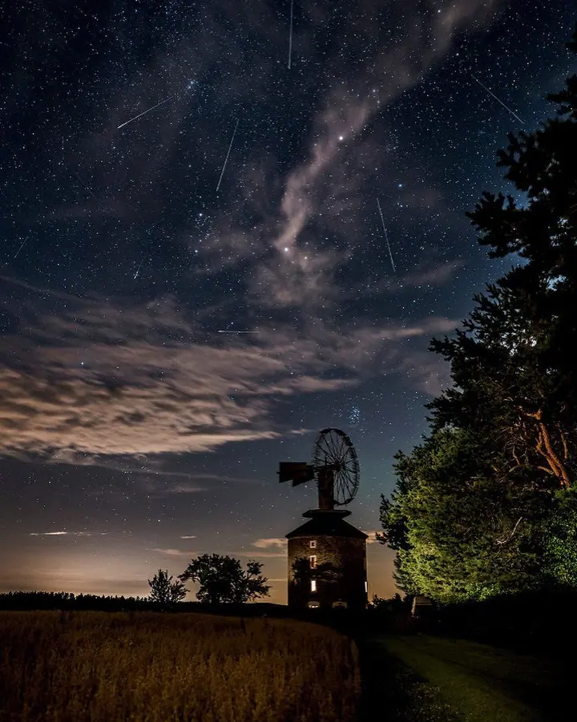
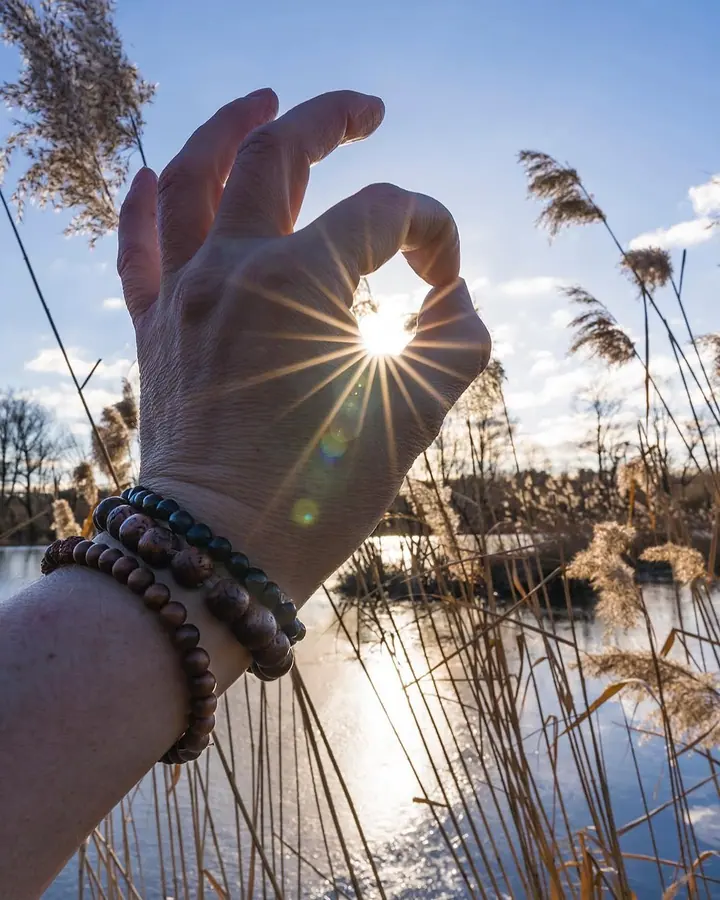
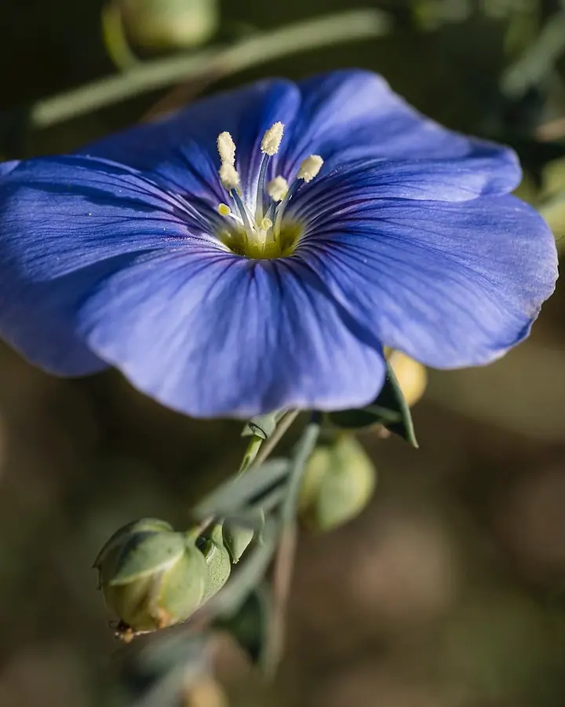
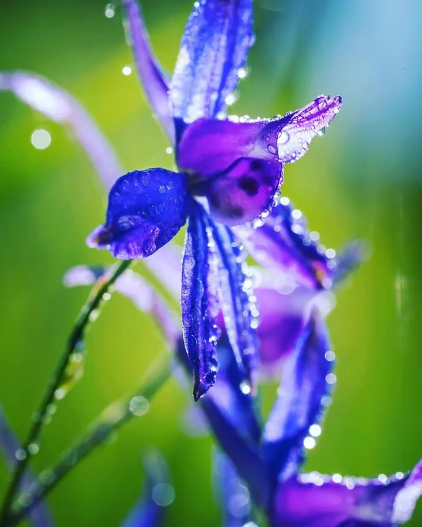
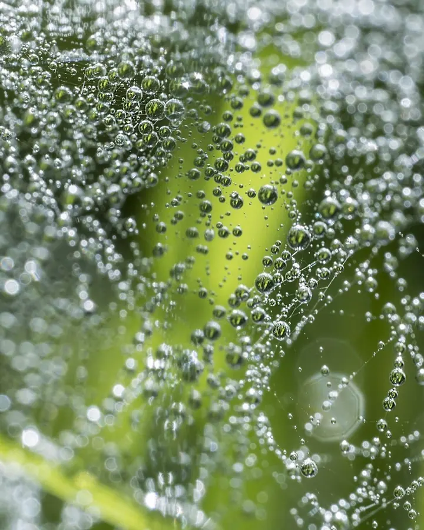
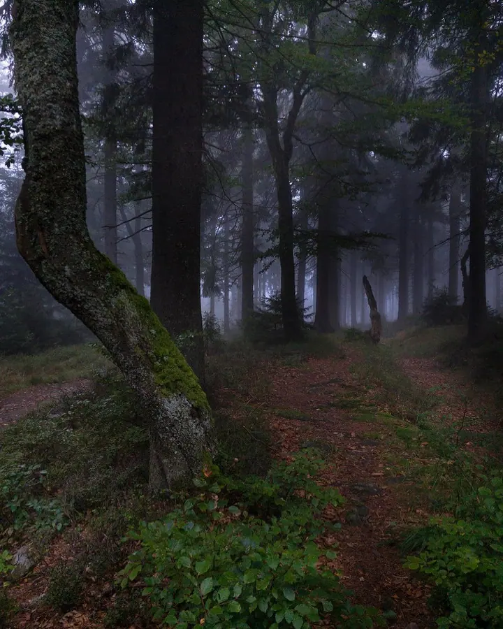
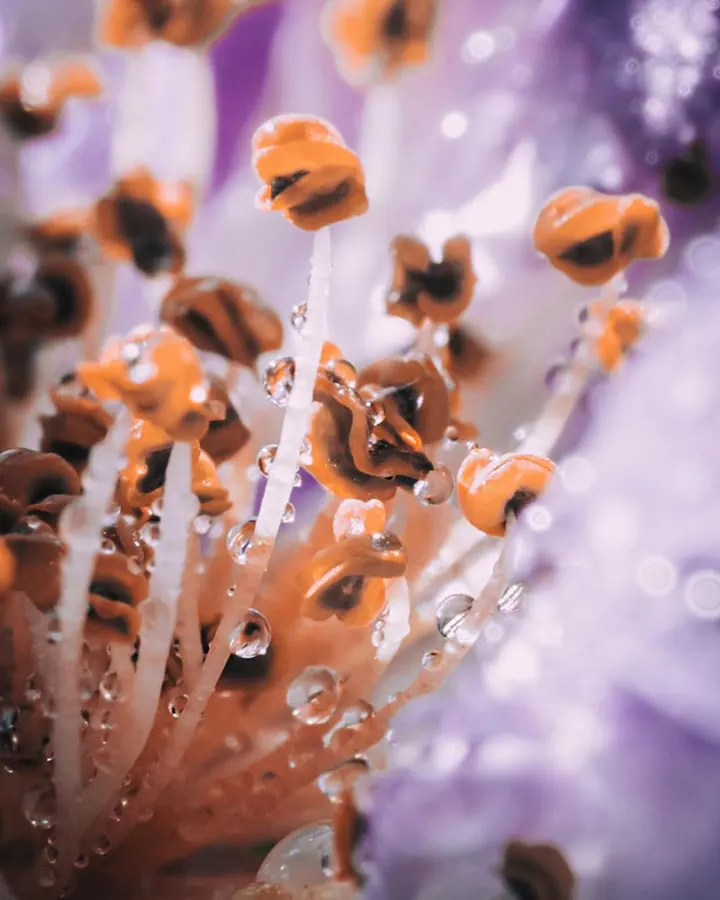

Stanislav Mrázek
Lidé, akce a příroda kolem Vyškova
Zeptat se na termín →(01) Ahoj
Jmenuji se Stanislav Mrázek a jsem z Vyškova. Fotím portréty, rodiny, páry, plesy i stužkováky, ale nejlépe si odpočinu venku v přírodě , při focení makra a krajinek .
1 820lidí sleduje mou práci na Instagramu
232příspěvků s fotkami a příběhy
(02) Co fotím
Focení, které má příběh
Co nabízím
-
01
Portréty
Portrétní focení venku i v přírodě, třeba v rozkvetlém sadu, ve vlčích mácích, v sakurách nebo v lese.
↗ -
02
Rodinné focení
Fotím rodiny i miminka. Nejraději venku, kde se všichni cítí uvolněně.
↗ -
03
Párové focení
Společné focení pro dva v přírodě. Pomalu se teď pouštím i do svateb.
↗ -
04
Akce a reportáže
Fotím plesy, stužkováky, narozeniny, koncerty i reportáže, třeba z rallye Vyškov.
↗
(04) Postup
Jak to probíhá
Od první zprávy po hotovou galerii.
-
1
Krok 1 z 4
Ozvěte se mi
Napište e-mail nebo zavolejte a popište, co si představujete: portrét, rodinu, pár nebo akci.
-
2
Krok 2 z 4
Domluvíme detaily
Vybereme termín a místo. U focení venku se ráda řídím světlem a ročním obdobím, ať už jde o sad v květu, vlčí máky nebo podzimní les.
-
3
Krok 3 z 4
Focení
Fotíme v klidu a bez spěchu. Na akcích se pohybuji nenápadně a zachycuji, co se právě děje.
-
4
Krok 4 z 4
Hotové fotky
Fotky pečlivě vyberu a upravím a pošlu vám je. Na termínu odevzdání se domluvíme předem.
Nejvíc mě naučila příroda a její detaily
(05) Za objektivem
Ahoj, jsem Stanislav
Fotím už několik let. Dlouho jsem se věnoval hlavně makru a přírodě: kapkám rosy, květům, houbám v lese nebo noční obloze. Tahle trpělivá práce se světlem a detailem mě naučila dívat se pozorně.
Teď se čím dál víc věnuji lidem a jejich okamžikům. Fotím portréty v rozkvetlých sadech i ve vlčích mácích, rodiny, miminka, páry, ale i plesy, stužkováky, narozeniny, koncerty, auta nebo psy. A začínám fotit svatby.
Rád cestuji a fotím na Sony A7 III a A7 IV. Když se budete chtít domluvit na focení, napište mi nebo zavolejte. Společně vymyslíme, kde a jak to pojmeme.
- 01Jsem z Vyškova
- 02Fotím na Sony A7 III a A7 IV
- 03Rád cestuji
- 04Miluji makro a přírodu
- 05Začínám fotit svatby
Stanislav
Stanislav Mrázek · Fotograf portrétů, rodin a akcí
Jaké akce fotíte?
Plesy, stužkováky, narozeniny, koncerty a reportáže. Fotil jsem třeba i rallye Vyškov.
Fotíte i svatby?
Ano, se svatbami teprve začínám. Pokud chcete, napište mi a probereme, co by se vám líbilo.
Kde fotíte?
Jsem z Vyškova a nejčastěji fotím v okolí, rád venku v přírodě. Na jiném místě se můžeme domluvit.
Fotíte i zvířata nebo auta?
Ano, fotím psy i auta. Stačí mi napsat, co máte v plánu.
(07) Kontakt
Domluvme se na focení
Napište pár vět o tom, co si představujete, a termín, který se vám hodí.
foto@stanislavmrazek.cz- Instagram @stanislav_mrazek
- Vyškov